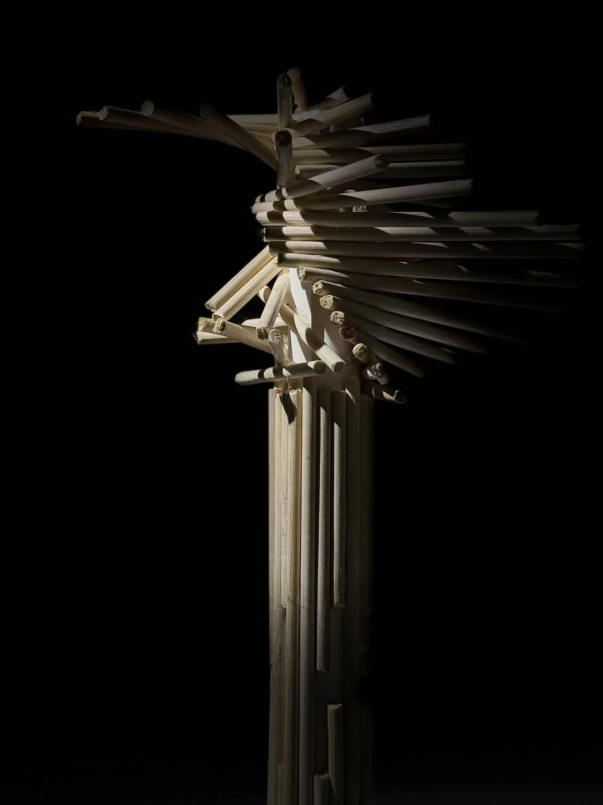

A-06 · Structural Concept
Helix Tower
Equal-length elements rotate around a circle to test balance, repetition, and vertical force.

- Year
- 2024
- Location / Field
- Tectonic research
- Role
- Independent study
- Recognition / Method
- Geometric equilibrium
Equilibrium through repetition.
Helix Tower explores a simple geometric operation: equal-length wooden elements are positioned tangentially to a circle and rotated upward at a constant angle.
The repeated rule creates spatial stacking without abandoning legibility. Each element depends on the next, turning serial rotation into both structural logic and visual rhythm.
The final model stands vertically on a single plane, testing how minimal contact and carefully distributed forces can produce architectural equilibrium.